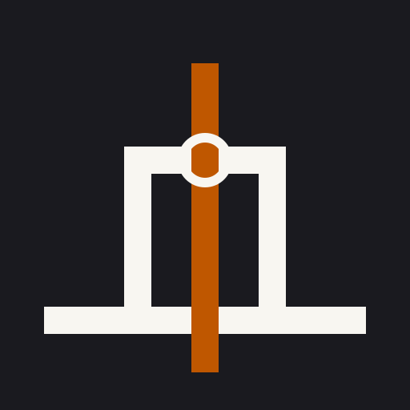
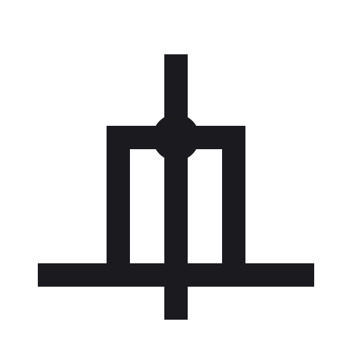
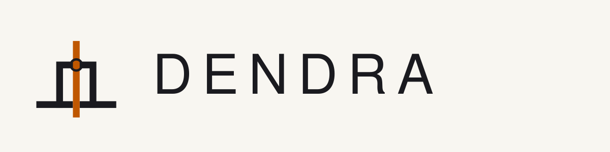
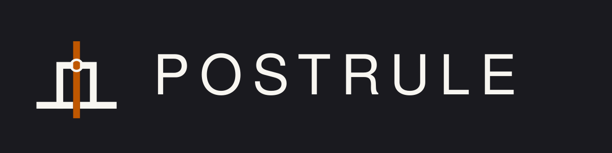
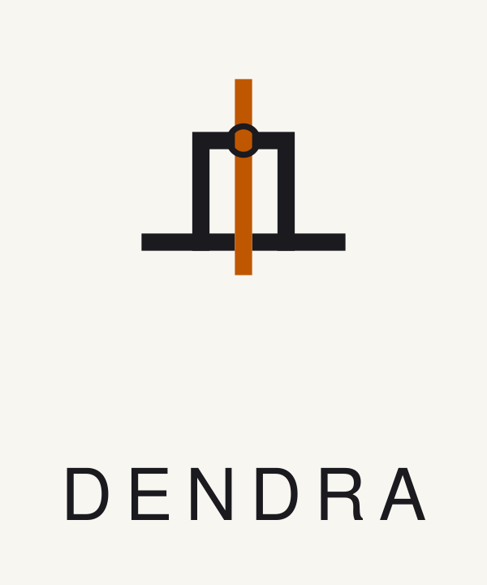
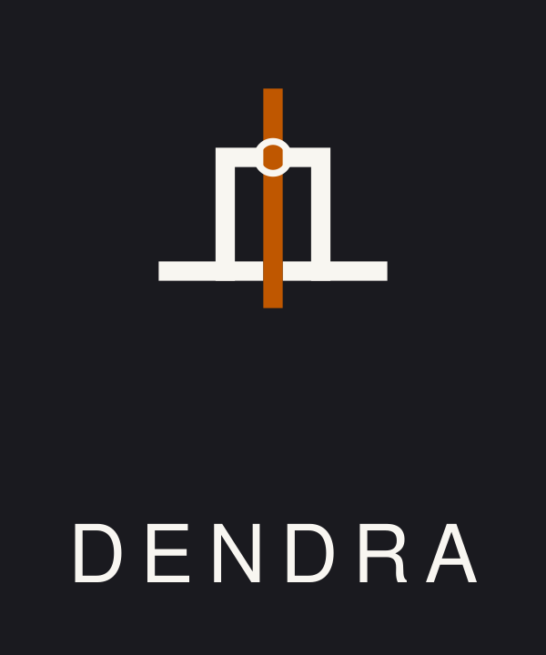
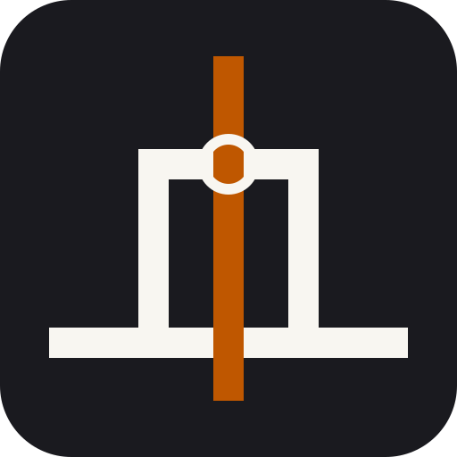
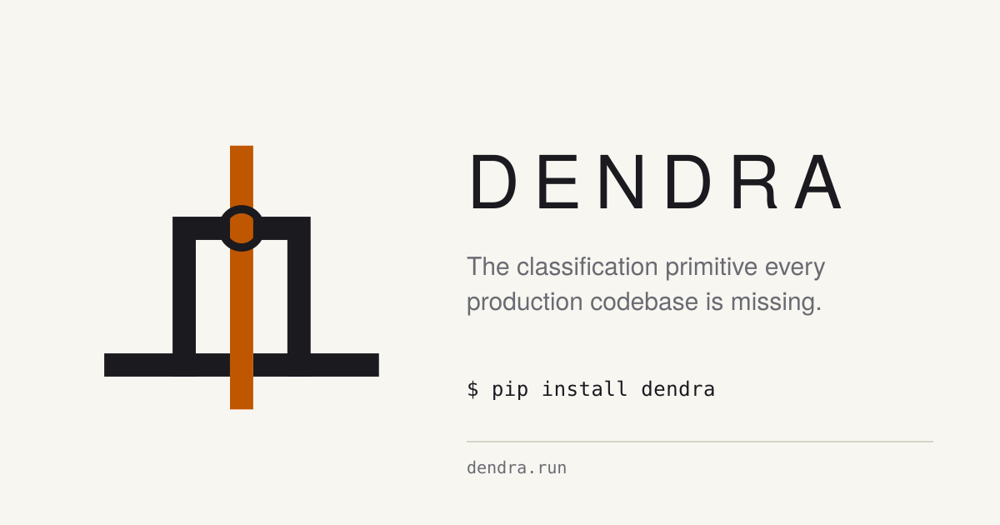
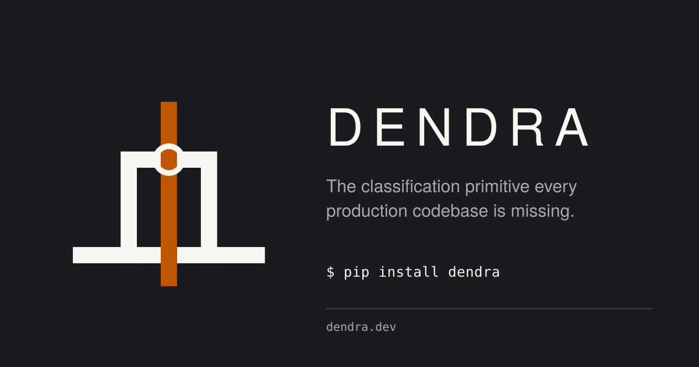

D2' · Node — all forms
The full kit for D2' · Gate · Rising · Node (the D2 refinement with a hollow ink ring at the threshold-crossing point, docking Postrule into B-Tree Labs' 28-r node vocabulary). Every form paired light ⟷ dark. All SVG; no raster builds yet — PNG exports come with the identity-designer refinement pass.
1 · Mark alone
Light ground
 96180
96180Dark ground

16
32
96
180
2 · Monochrome (single-color, no accent — for print / embroidery)
Mono · light ground

Mono · dark ground

3 · Horizontal wordmark
Light

Dark

4 · Stacked wordmark
Light

Dark

5 · Rounded tile — favicon / iOS home-screen / app icon
Tile is always a graphite rounded-corner surface with the mark inverted inside — same convention B-Tree Labs uses for its favicon variant. The tile reads as "Postrule" at 16 px and 1024 px without a separate low-fidelity simplification.

1632
64
120
180 (iOS)
256
6 · Open Graph social card — 1200 × 630
What posts to Hacker News, X, LinkedIn look like when
someone shares postrule.ai.
Light

Dark

7 · In context — simulated landing header (both modes)
POSTRULE
Code · Results · Pricing · GitHub
POSTRULE
Code · Results · Pricing · GitHub
Inventory
mark-light.svg— mark alone, light groundmark-dark.svg— mark alone, dark groundmark-mono-light.svg— single-color for light ground (no accent)mark-mono-dark.svg— single-color for dark ground (no accent)tile.svg— rounded graphite tile (favicon / iOS icon)wordmark-horizontal-light.svg/-dark.svg— horizontal lockupwordmark-stacked-light.svg/-dark.svg— stacked lockupsocial-card-light.svg/-dark.svg— 1200×630 OG card
PNG exports (favicon-16 / 32 / 180 / 512, mark-1024, social-card, etc.) come with the identity-designer refinement pass — these are SVG-first sketches, ready for a designer to tune proportions and generate raster artifacts from.